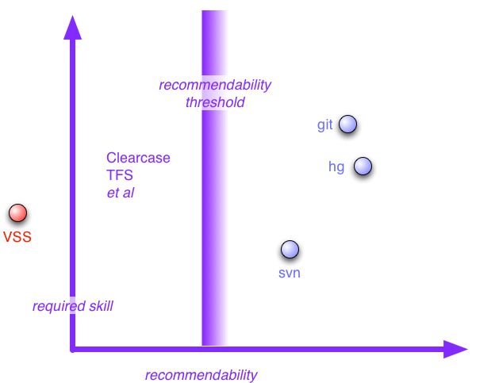

| VersionControlTools | tools | 17 February 2010 | Reactions |
|
If you spend time talking to software developers about tools, one of the biggest topics I hear about are version control tools. Once you've got to the point of using version control tools, and any competent developers does, then they become a big part of your life. Version tools are not just important for maintaining a history of a project, they are also the foundation for a team to collaborate. So it's no surprise that I hear frequent complaints about poor version control tools. In our recent ThoughtWorks technology radar, we called out two items as version control tools that enterprises should be assessing for use: Subversion and Distributed Version Control Systems (DVCS). Here I want to expand on that, summarizing many discussions we've had internally about version control tools. But first some pinches of salt. I wrote this piece based on an unscientific agglomeration of conversations with my colleagues inside ThoughtWorks and various friends and associates outside. I haven't engaged in any rigorous testing or structured comparisons, so like most of my writing this is based on AnecdotalEvidence. My personal experience in recent years is mostly subversion and mercurial, but my usage patterns are not typical of a software development team. Overwhelmingly my contacts like to work in an agile-xp approach (even if many sniff at the label) and need tools that support that work style. I expect many people to be annoyed by this article. I hope that annoyance will lead to good articles that I can link to. Fundamentally there's three version control systems that get broad approval: subversion (svn), git, and mercurial (hg). Behind the Recommendability ThresholdMany tools fail to pass the recommendability threshold. There are two reasons why: poor capability or poor visibility. Many tools garner consistent complaints from ThoughtWorkers about their lack of capability. (ThoughtWorkers being what they are, all tools, including the preferred set, get some complaints. Those behind the threshold get mostly complaints.) Two in particular generate a lot of criticism: ClearCase (from IBM) and TFS (from Microsoft). One reason they get a lot of criticism is that they are very popular on client sites, often with company policies mandating their use (I'll describe a coping strategy for that at the end). It's fair to say that often these problems are compounded by company policies around using VCS. I've heard of some truly bizarre work-flows imposed on teams that make it a constant hurdle to get anything done. Since the VCS is the tool that enforces these work-flows, it does tend to get tarred with that brush. I'm not going to go into details about the problems the poor-capability tools have here, that would be another article. (This has probably made me even more unpopular in IBM and Microsoft as it is.) I will, at least for the moment, leave it with the fact that developers I respect have worked extensively with, and do not recommend, these products. The second reason for shuffling a tool behind the recommendability threshold is that I don't hear many comments about some tools. This is an issue because less-popular tools make it difficult to find developers who know how to use them or want to find out. There are many reasons why otherwise good tools can fall behind there. I used to hear people say good things about Perforce, but now the feeling seems to be that it doesn't have compelling advantages over Subversion, let alone the DVCSs. Speaking of DVCSs, there are more than just the two I've highlighted here. Bazaar, in particular, is one I occasionally hear good things about, but again I hear about it much less often then git or Mercurial. Before I finish with those behind the threshold, I just want to say a few things about a particularly awful tool: Visual Source Safe, or as I call it: Visual Source Shredder. We see this less often now, thank goodness, but if you are using it we'd strongly suggest you get off it. Now. Not just is it a pain to use, I've heard too many tales of repository corruption to trust it with anything more valuable than foo.txt. So this leaves three tools that my contacts are generally happy with. I find it interesting that all three are open-source. Choosing between these tools involves first deciding between a centralized or distributed VCS model and then, if you chose DVCS, choosing between git and mercurial. Distributed or CentralizedMost of the time, the choice between centralized and distributed rests on how skilled and disciplined the development team is. A distributed system opens up lots of flexibility in work-flow, but that flexibility can be dangerous if you don't have the maturity to use it well. Subversion encourages a simple central repository model, discouraging large scale branching. In an environment that's using Continuous Integration, which is how most of my friends like to work, that model fits reasonably well. As a result Subversion is a good choice for most environments. And although DVCSs give you lots of flexibility in how you arrange your work-flows, most people I know still base their work patterns on the notion of a shared mainline repository that's used with Continuous Integration. Although modern VCS have almost magic tools to merge different people's changes, these merges are still just merging text. Continuous Integration is still necessary to get semantic consistency. So as a result even a team using DVCS usually still has the notion of the central master repository. Subversion has three main downsides compared to its cooler distributed cousins. Because distributed systems always give you a local disk copy of the whole repository, this means that repository operations are always fast as they don't involve network calls to central servers. This is a palpable difference if you are looking at logs, diffing to old revisions, and anything else that involves the full repository. If this is noticeable on my home network, it is a huge issue if your repository is on another continent - as we find with our distributed projects. If you travel away from your network connection to the repository, a distributed system will still allow you to work with the repository. You can commit checkpoints of your work, browse history, and compare revisions on an airplane without a network connection. The last downside is more of a social issue than a true tool issue. DVCS encourages quick branching for experimentation. You can do branches in Subversion, but the fact that they are visible to all discourages people from opening up a branch for experimental work. Similarly a DVCS encourages check-pointing of work: committing incomplete changes, that may not even compile or pass tests, to your local repository. Again you could do this on a developer branch in Subversion, but the fact that such branches are in the shared space makes people less likely to do so. This last point also leads to the argument against a DVCS, that it encourages wanton branching, that feels good early on but can easily lead you to merge doom. In particular the FeatureBranch approach is a popular one that I don't encourage. As with similar comments earlier I must point out that reckless branching isn't something that's particular to one tool. I've often heard people in ClearCase environments complain of the same issue. But DVCSs encourage branching, and that's the major reason why I indicate that team needs more skill to use a DVCS well. There is one particular case where subversion is the better choice even for a team that skilled at using a DVCS. This case is where the artifacts you're collaborating on are binary and cannot be merged by the VCS - for example word documents or presentation decks. In this case you need to revert to pessimistic locking with single-writer checkouts - and that requires a centralized system. Git or MercurialSo if you're going to go the DVCS route - which one should you choose? Mercurial and git get most of the attention, so I feel the choice is between them. Then the choice boils down to power versus usability, with a dash of mind-share and the shadow of github. Git certainly seems to be liked for its power. Folks go ga-ga over it's near-magical ability to do textual merges automatically and correctly, even in the face of file renames. I haven't seen any objective tests comparing merge capabilities, but the subjective opinion favors git. (Merge-through-rename, as my colleague Lucas Ward defines it, describes the following scenario. I rename Foo.cs to Bar.cs, Lucas makes some changes to Foo.cs. When we merge his changes are correctly applied to Bar.cs. Both git and Mercurial handle this.) For many git's biggest downside was its oft-cryptic commands and mental model. Ben Butler-Cole phrased it beautifully: "there is this amazingly powerful thing writhing around in there that will basically do everything I could possibly ask of it if only I knew how." To its detractors, git lacks discoverability - the ability to gradual infer what it does from it's apparent design. Git's advocates say that much of this is because it uses a different mental model to other VCSs, so you have to do more unlearn your knowledge of VCS to appreciate git. Whatever the reason git seems to be attractive more to those who enjoy learning the internals while mercurial seems to appeal more to those who just want to do version control. The shadow of github is important here. Even git-skeptics rate it as a superb place for project collaboration. Mercurial's equivalent, bitbucket, just doesn't inspire the same affection. However there are other sites that may begin to close the gap, in particular Google Code and Microsoft's Codeplex. (I find Codeplex's use of Mercurial very encouraging. Microsoft is often, rightly, criticized for not collaborating well with complementary open source products. Their use of Mercurial on their open-source hosting site is a very encouraging sign.) Historically git worked poorly on Windows, poorly enough that we'd not suggest it. This has now changed, providing you run it using msysgit and not cygwin. Our view now is that msysgit is good enough to make comparison with Mercurial a non-issue for Windows. People generally find that git handles branching better than Mercurial, particular for short-lived branches for experimentation and check-pointing. Mercurial encourages other mechanisms, such as fast cloning of separate repository directories and queue patching, but git's branching is a simpler and better model. Mercurial does seem to have an issue with large binary files. My general suggestion is that such things are usually better managed with subversion, but if you have too few of them to warrant separate management, then Mercurial may get hung up by the few that you have. Multiple VCSThere's often value to using more than one VCS at the same time. This is generally where there is a wider need to use a less capable VCS than your team wants to use. The case that we run into frequently is where there is a corporate standard for a deficient VCS (usually ClearCase) but we wish to work efficiently. In that case we've had success using a different VCS for day-to-day team team work and committing to the corporate VCS when necessary. So while the team VCS will see several commits per person per day, the corporate VCS sees a commit every week or two. Often that's what the corporate admins prefer in any case. Historically we've done this using svn as the local VCS but in the future we're more likely to use a DVCS for local fronting. This dual usage scenario is also common with git-svn where people use git locally but commit to a shared svn system. Git-svn is another reason for preferring git over mercurial. Using a local DVCS is particularly valuable for remote site working, where network outages and bandwidth problems can cripple a site that's remote from a centralized VCS. A lot of teams can benefit from this dual-VCS working style, particularly if there's a lot of corporate ceremony enforced by their corporate VCS. Using dual-VCS can often make both the local development team happier and the corporate controllers happier as their motivations for VCS are often different. One Final NoteRemember that although I've jabbered on a lot about tools here, often its the practices and workflows that make a bigger difference. Tools can certainly make it much easier to use a good set of practices, but in the end it's up to the people to use an effective way of working for their environment. I like to see approaches that allow many small changes that are rapidly integrated using Continuous Integration. I'd rather use a poor tool with CI than a good tool without. |
|||